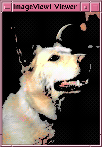

ImageAdd ANDs the red values, green values and blue values for the two input images to generate a new image. Mathematically it can be expressed as follows:
rr(i, j) = r1(i, j) AND r2(i, j)
gr(i, j) = g1(i, j) AND g2(i, j)
br(i, J) = b1(i, j) AND b2(i, j)
This network isolates all pixels with intensities greater than a defined value. It works by taking two copies of the image. It then uses ToGreyScale to general a grey scale image and then uses Threshold to generate a black and white image where all pixels of intensity higher than the defined value are white and all others are black. It then uses this image, together with ImageAnd, as a 'cookie cutter' on a colour version of the image. Typical results are:
 |
 |
| Before operation | After operation |